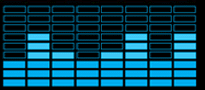
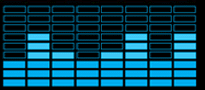

Very nice
One idea: can you add option to make start buttons all-the-time-animated? That can be cool
And suggestion to animated button maker: nice spectrum analyzer (or graphic equalizer)!

| Classic Shell http://www.classicshell.net/forum/ |
|
| Featured animated Start buttons http://www.classicshell.net/forum/viewtopic.php?f=18&t=4415 |
Page 1 of 1 |
| Author: | Gaurav [ Sun Mar 29, 2015 9:58 pm ] |
| Post subject: | Featured animated Start buttons |
Starting with version 4.0.5, Classic Shell supports highly detailed animated Start buttons. These are not your usual 3-button simple "animation" but consist of several frames. There are many animated buttons in the forum but some members have created really outstanding animated buttons. To browse only these featured animated Start buttons in this forum, click here: To download an animated button, right click and save its PNG file which contains several frames of the animation. Then set it like a regular button from Start Menu settings. The specification for creating animated Start buttons is here: http://www.classicshell.net/tutorials/buttontutorial.html |
|
| Author: | ZoNi [ Sun Apr 05, 2015 3:02 pm ] |
| Post subject: | Re: Browse only animated Start buttons |
Very nice One idea: can you add option to make start buttons all-the-time-animated? That can be cool And suggestion to animated button maker: nice spectrum analyzer (or graphic equalizer)!  |
|
| Author: | Jcee [ Sun Apr 05, 2015 4:03 pm ] |
| Post subject: | Re: Browse only animated Start buttons |
been suggested several times by myself included, but according to ivo its to resource intensive, and distracting (still should be an option for the button animators to choose |
|
| Author: | Gaurav [ Sun Apr 05, 2015 7:55 pm ] |
| Post subject: | Re: Browse only animated Start buttons |
Animation showing the all the time is wastage of resources and a distraction too. |
|
| Author: | Ivo [ Sun Apr 05, 2015 8:01 pm ] |
| Post subject: | Re: Browse only animated Start buttons |
It is not just a matter of resources. It may stop a laptop from going to sleep and drain the battery. |
|
| Author: | Jcee [ Sun Apr 05, 2015 8:55 pm ] |
| Post subject: | Re: Browse only animated Start buttons |
I didn't think about the keeping awake |
|
| Author: | ZoNi [ Tue Sep 15, 2015 8:14 am ] |
| Post subject: | Re: Browse only animated Start buttons |
ZoNi wrote: One idea: can you add option to make start buttons all-the-time-animated? That can be cool It is already possible with some other tools |
|
| Author: | Captcha142 [ Sun Sep 10, 2017 7:07 am ] |
| Post subject: | Re: Browse only animated Start buttons |
Jcee wrote: been suggested several times by myself included, but according to ivo its to resource intensive, and distracting (still should be an option for the button animators to choose Actually, I made a moderately decent animation creator on the forums - It can automatically generate spins, but other animation requires a GIF (that it automatically converts to a start button). I would improve it, but I'm moving to linux so I don't have a use for it any more. |
|
| Page 1 of 1 | All times are UTC - 8 hours [ DST ] |
| Powered by phpBB® Forum Software © phpBB Group https://www.phpbb.com/ |
|